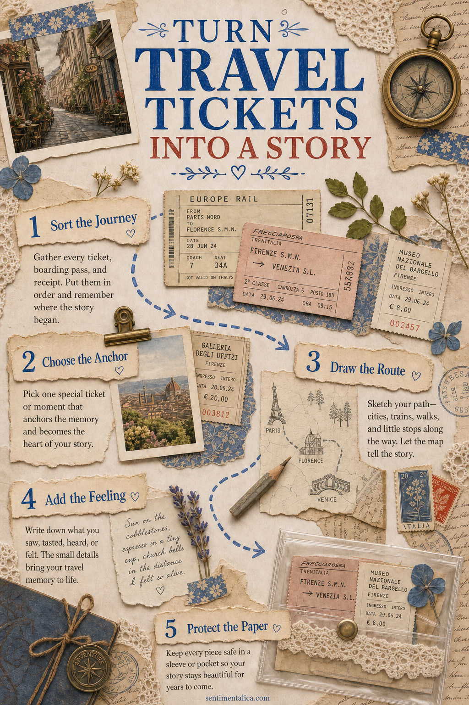
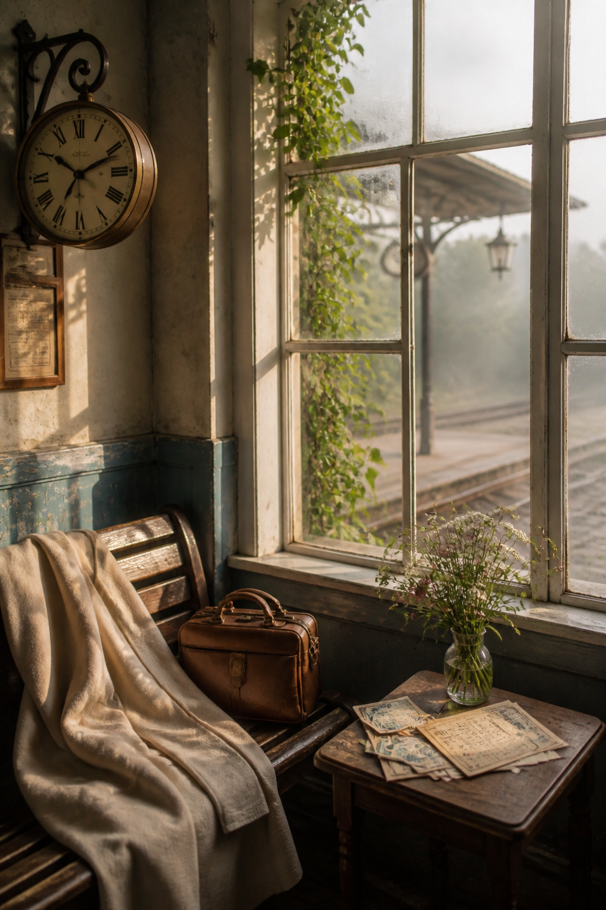

Travel tickets are small pieces of design that already contain a story: a place, a date, a time, a price, and proof that you moved from one point to another. The challenge is not finding a use for them. It is deciding which part of the journey they should tell.
Instead of gluing every ticket into a crowded collage, choose a simple narrative. Your page might follow one day, one route, one delay, or the gradual movement from home into somewhere unfamiliar.

Sort by journey before sorting by color
Lay out the tickets in chronological order. Group connections, return journeys, and places visited on the same day. Only after the route makes sense should you look for visual harmony.
This prevents a beautiful blue ticket from ending up beside an unrelated memory simply because the colors match. Story can tolerate a little color mismatch. A page without a clear relationship between its pieces is harder to understand.
Choose the ticket that carries the page
Pick one ticket as the anchor. It may have the clearest place name, the most interesting typography, or the strongest emotional connection. Keep it whole if possible and place it where its important information remains easy to read.
Supporting tickets can be folded, overlapped, or partly tucked into a pocket. Do not cover every date and destination. Those practical marks are what make travel paper beautiful.
Draw the missing route
Connect the tickets with a pencilled line, a stitched path, or a simplified map. Add the names of stations, streets, or landmarks that were not printed on the paper. The line helps separate pieces become one journey.
If the route changed, show the correction. Cross out the first plan lightly and draw the new one beside it. Detours often become the part of a trip you remember best.

Add what the ticket cannot say
A train ticket can record departure time but not the sleepy platform, the coffee balanced on a suitcase, or the view when the weather cleared. Write one sensory detail beside each stage of the route.
- What could you hear while waiting?
- What did the seat or station feel like?
- Which color appeared outside the window?
- What did you carry in your hand?
- When did you realize you had arrived?
Short answers are enough. A few specific words will bring the journey back more quickly than a polished summary.
Protect fragile and fading paper
Many modern tickets are printed on thermal paper and may fade over time. Photograph or scan them soon after the trip. Print a copy for the journal if the original is especially important, and store the original away from heat and direct light.
Use photo corners, a transparent pocket, or a paper hinge when you do not want adhesive on the ticket. A fold-out works well for boarding passes and long rail tickets that would otherwise dominate the page.
Try three ticket-page structures
- The timeline: arrange tickets from morning to evening with one line connecting them.
- The round trip: place outward and return tickets opposite each other, with the destination memory between them.
- The missed connection: layer the original plan beneath the replacement ticket and write what happened in the gap.
Choose one structure per spread. Repeating the same approach for an entire trip can make a pile of unrelated papers feel like a designed travel archive.
Let the destination appear quietly
Add one photograph, local label, postage stamp, or color sampled from the place. It should support the tickets rather than compete with them. A narrow piece of tiled blue paper may say Lisbon; red transit lettering may recall London; warm ochre may hold an Italian afternoon.
The ticket proves where you went. Your note preserves what it felt like to get there.
End the page with an arrival sentence and the date. Leave a little open space after it, like the pause when a journey finishes and you look up from the route.
For more practical ways to preserve trips and small paper memories, explore the Sentimentalica journal.